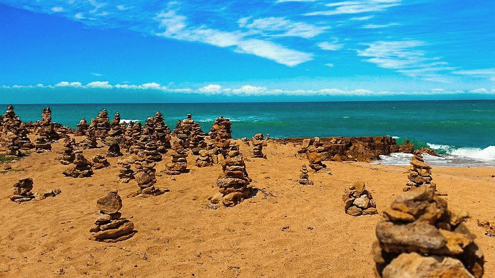

Punta Gallina |
|
|  |
Es el punto más septentrional de América del Sur y se caracteriza por una belleza natural simple y salvaje. Punta Gallinas está localizado en el extremo norte de la península de la Guajira, la naturaleza en esta región es sorprendente y espectacular al igual que las dunas de arena y los acantilados rocosos que emergen del mar. La duna de arena más alta tiene 60 metros y se presenta como una muralla al lado del mar. Al lado de Punta Gallinas habitan aproximadamente 100 personas de la etnia Wayúu, esta es una de las únicas culturas de américa del sur que han conservado sus tradiciones ancestrales. El paisaje es desierto y las playas están protegidas por la comunidad Wayuu. Esta zona, digna de la paleta de un pintor, las aguas de color turquesa del Mar Caribe contrastan con las dunas de arena ocre de las playas de alrededor. Observamos discretamente la fauna de esta región salvaje y preservada: los pelícanos y los flamencos rosados beben al borde del agua |
Cabo de la Vela |
|
|
El cabo de la Vela es un accidente costero en el sur del mar Caribe.
Localizado en la alta Guajira, es un precioso espacio donde el mar y el desierto se toman de la mano y dispone de varios acantilados que embellecen aún más si cabe a este lugar tan turístico.
Un turismo además ecológico y aventurero, amante de deportes acuáticos como el windsurf o kitesurf.
Allí residen los Wayuu, indígenas locales que ofrecen sus servicios como guías o para comer la gastronomía típica del lugar. El principal atractivo del Cabo de la Vela son sus playas limpias, blanquísimas y de difícil comparación con otras de Colombia, pues los turistas señalan que sólo pueden ser vistas en los paraísos de otros países como México, República Dominicana y Cuba. Además, geográficamente constituye el extremo de Suramérica, circunstancia que seduce a los viajeros del mundo, sobre todo si existen lugares exóticos e historia antiquísima. |
Comidas Tipicas |
|
|
La comida típica de la Guajira es considerada una de las más interesantes de toda Colombia,
|
|